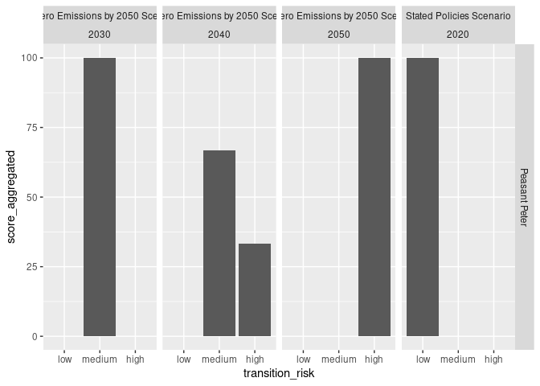

The goal of tiltIndicator is to help you develop each TILT indicator.
This repository hosts only public code and may only show only fake data.
Installation
You can install the development version of tiltIndicator from GitHub with:
# install.packages("devtools")
devtools::install_github("2DegreesInvesting/tiltIndicator")Example
We’ll use datasets that come with the tiltIndicator package.
companies
#> # A tibble: 10 × 5
#> company_id company_name products sector subse…¹
#> <dbl> <chr> <chr> <chr> <chr>
#> 1 1 Peasant Peter screws steel_metal_tran… bendin…
#> 2 2 Peasant Peter aluminium_alloy steel_metals alumin…
#> 3 3 Peasant Peter ultrafilstration cars vehicl…
#> 4 4 Peasant Paul frozen_food frozen_food cheese…
#> 5 5 Tom's Car Company oils cars automo…
#> 6 6 Tom's Car Company bolts steel_metal_tran… bendin…
#> 7 7 Screwdriver Expert chucks steel_metal_tran… boring…
#> 8 8 Screwdriver Expert adaptator_plate steel_metal_tran… boring…
#> 9 9 John Meier's Cars disinfection_products cars vehicl…
#> 10 10 John Meier's Cars ultrafilstration cars vehicl…
#> # … with abbreviated variable name ¹subsector
ep_weo
#> # A tibble: 133 × 6
#> EP_categories_id EP_gr…¹ EP_se…² EP_su…³ weo_p…⁴ weo_f…⁵
#> <chr> <chr> <chr> <chr> <chr> <chr>
#> 1 d3a7a3c40afd18a7a840942262099f23f65c… metall… steel_… bendin… Total Iron a…
#> 2 8d926b734410de5ba68daa17089a14c1bc1b… metall… steel_… boiler… Total Iron a…
#> 3 2eed5a1fd604b1d3ec561a07257b8a1eb99f… metall… steel_… boring… Total Iron a…
#> 4 157f4f5953d1a5bfee474217567dc2e65068… metall… steel_… brazin… Total Iron a…
#> 5 2092de203e479b67bea02356318c0c8fc8e0… metall… steel_… broach… Total Iron a…
#> 6 62dea331c70a02280d5f71a27ec140305aff… metall… steel_… bronzi… Total Iron a…
#> 7 8c02cdfddde68d166c1352fa745df959f4ff… metall… steel_… canopi… Total Iron a…
#> 8 e593b1156ce341881d18b82747a3c0bb490c… metall… steel_… chrome… Total Iron a…
#> 9 b044eec1205c7ef2fde9e38db6b9b308a1bd… metall… steel_… cleani… Total Iron a…
#> 10 0880f49af456479b3e4f99c1ed0d14217e26… metall… steel_… cuttin… Total Iron a…
#> # … with 123 more rows, and abbreviated variable names ¹EP_group, ²EP_sector,
#> # ³EP_subsector, ⁴weo_product_mapper, ⁵weo_flow_mapper
weo_2022
#> # A tibble: 8 × 10
#> publication scena…¹ region categ…² product flow unit year value reduc…³
#> <chr> <chr> <chr> <chr> <chr> <chr> <chr> <dbl> <dbl> <dbl>
#> 1 World Energy … Stated… world co2 co… Total Road… mt c… 2020 2.79e3 0
#> 2 World Energy … Net Ze… world co2 co… Total Road… mt c… 2030 1.63e3 41.7
#> 3 World Energy … Net Ze… world co2 co… Total Road… mt c… 2040 5.47e2 80.4
#> 4 World Energy … Net Ze… world co2 co… Total Road… mt c… 2050 8.46e1 97.0
#> 5 World Energy … Stated… world co2 co… Total Iron… mt c… 2020 2.59e3 0
#> 6 World Energy … Net Ze… world co2 co… Total Iron… mt c… 2030 1.95e2 31.4
#> 7 World Energy … Net Ze… world co2 co… Total Iron… mt c… 2040 1.01e4 66.9
#> 8 World Energy … Net Ze… world co2 co… Total Iron… mt c… 2050 7.43e3 91.5
#> # … with abbreviated variable names ¹scenario, ²category, ³reductionsThe pstr_*() functions help you work with the product-sector-transition-risk indicator.
with_scores <- companies |>
pstr_add_reductions(ep_weo, weo_2022) |>
pstr_add_transition_risk() |>
pstr_aggregate_scores()
#> Warning: Returning more (or less) than 1 row per `summarise()` group was deprecated in
#> dplyr 1.1.0.
#> ℹ Please use `reframe()` instead.
#> ℹ When switching from `summarise()` to `reframe()`, remember that `reframe()`
#> always returns an ungrouped data frame and adjust accordingly.
#> ℹ The deprecated feature was likely used in the tiltIndicator package.
#> Please report the issue to the authors.
with_scores
#> # A tibble: 19 × 5
#> # Groups: company_name, transition_risk, scenario, year [19]
#> company_name transition_risk scenario year score…¹
#> <chr> <chr> <chr> <dbl> <dbl>
#> 1 John Meier's Cars high Net Zero Emissions by 2050 … 2040 100
#> 2 John Meier's Cars high Net Zero Emissions by 2050 … 2050 100
#> 3 John Meier's Cars low Stated Policies Scenario 2020 100
#> 4 John Meier's Cars medium Net Zero Emissions by 2050 … 2030 100
#> 5 Peasant Paul no_sector <NA> NA 100
#> 6 Peasant Peter high Net Zero Emissions by 2050 … 2040 33.3
#> 7 Peasant Peter high Net Zero Emissions by 2050 … 2050 100
#> 8 Peasant Peter low Stated Policies Scenario 2020 100
#> 9 Peasant Peter medium Net Zero Emissions by 2050 … 2030 100
#> 10 Peasant Peter medium Net Zero Emissions by 2050 … 2040 66.7
#> 11 Screwdriver Expert high Net Zero Emissions by 2050 … 2050 100
#> 12 Screwdriver Expert low Stated Policies Scenario 2020 100
#> 13 Screwdriver Expert medium Net Zero Emissions by 2050 … 2030 100
#> 14 Screwdriver Expert medium Net Zero Emissions by 2050 … 2040 100
#> 15 Tom's Car Company high Net Zero Emissions by 2050 … 2040 50
#> 16 Tom's Car Company high Net Zero Emissions by 2050 … 2050 100
#> 17 Tom's Car Company low Stated Policies Scenario 2020 100
#> 18 Tom's Car Company medium Net Zero Emissions by 2050 … 2030 100
#> 19 Tom's Car Company medium Net Zero Emissions by 2050 … 2040 50
#> # … with abbreviated variable name ¹score_aggregated
with_scores |> pstr_plot_company("Peasant Peter")